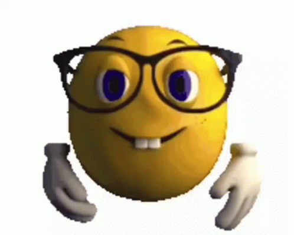

Como assim dois universos?
O segundo universo de Jojo é o universo alternativo que aparece nas partes 7, 8 e 9 de Jojo’s Bizarre Adventure, uma série de mangá e anime criada por Hirohiko Araki. Nesse universo, os personagens, as histórias e alguns poderes com a exceção dos stand, são diferentes do universo original, que abrange a parte 1 até 6. Nenhum mangá do segundo universo foi traduzido oficialmente.
Parte 7: STEEL BALL RUN

A setima parte STEEL BALL RUN Situado em 1890 nos Estados Unidos, Steel Ball Run segue uma corrida em todo o continente dos Estados Unidos da América.

Para mais informações clique Aqui
Parte 8: JoJolion
A oitava parte de JoJo’s Bizarre Adventure, intitulada “JoJolion”, se passa no ano 2011. O estudante universitário Yasuho Hirose descobre um homem com amnésia chamado “Josuke” em Morioh após o Grande terremoto do Leste do Japão.
Para mais informações clique Aqui
Parte 9: The JOJOLands (Em lançamento)
A história se passa no Havaí. O próprio protagonista, Jodio Joestar, apresenta sua história como a história de como ele vai ficar rico ao vê-lo em um barco olhando para uma erupção vulcânica.
Para mais informações clique Aqui